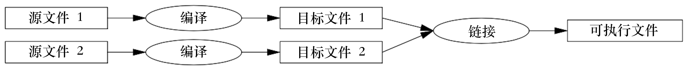
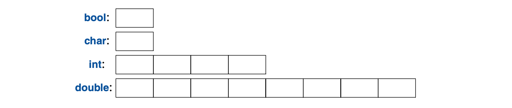
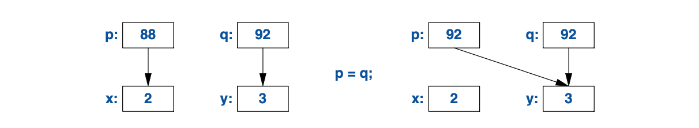
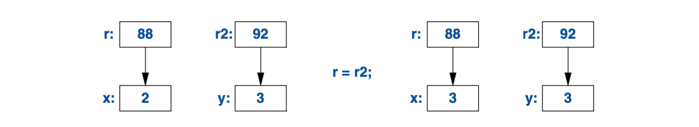

1
基础知识
我们要做的第一件事儿，
就是把律师统统杀光。
—— 《亨利六世》（中）1
1.1 导言
本章将简略地呈现C++的文法、内存模型和计算模型，和把代码组织成程序的基本机制。 这部分语言特性所支持的编程风格常见于 C， 也被称为过程式编程（procedural programming）。
1.2 程序
C++是种编译型语言。要运行一个程序，其源文本需要通过编译器处理， 生成一些目标文件，再经链接器组合后给出一个可执行文件。 一个典型的C++程序要使用多个源代码文件（通常简称为源文件(source files)）生成。

可执行文件针对特定的 硬件/操作系统 组合而生成，不可移植，比方说， 不能从 Mac系统 拿到 Windows系统 上运行。 当我们说到 C++ 程序的可移植性时，一般是在说源代码的可移植性； 就是说，这份源码可以在多个系统上被编译并运行。
ISO C++ 标准定义了两类东西：
- 语言核心特性(core language features)，
诸如内置的类型（例如
char和int） 以及循环（例如for-语句 和while-语句） - 标准库组件(standard-library components)，
诸如容器（例如
vector和map） 以及 I/O 操作（例如<<和getline()）
标准库组件完全是普通的 C++ 代码，由具体的 C++ 实现提供。 换句话说， C++ 标准库可以且确实是用 C++ 自身 (包括少量的机器语言代码，用于线程上下文切换等功能)实现的。 这意味着，对多数需求严苛的系统编程而言，C++ 具有足够的表达能力和效率。
C++ 是静态类型语言。 就是说，任何一个东西（例如对象、值、名称和表达式）被用到的时候， 编译器都必须已经知晓其类型。对象的类型确定了可施加操作的集合。
1.2.1 Hello, World!
最小的 C++ 程序是
int main(){} // 最小的 C++ 程序
这定义了一个名为main的函数，它不接受参数，也不执行任何操作。
花括号{}，在 C++ 中表示结组。在此处，它标示了函数体的起止点。
双斜杠，//，发起一个注释并延续至行尾。
注释是供人阅读的，编译器忽略所有注释。
每个 C++ 程序必须有且只有一个名为main()的全局函数。
整个程序由该函数开始执行。
如果main()返回了任何int整数值，该值被返回给“系统”。
如果没有返回值，系统会接收到一个值，表示执行成功。
main()返回的非零值表示出错。并非所有操作系统和执行环境都会用到这个返回值。
基于 Linux/Unix 的环境用它，而基于 Windows 的环境几乎不用。
一般来说，程序会有些输出，以下程序写出Hello, World!：
#include <iostream>
int main()
{
std::cout << "Hello, World!\n";
}
#include <iostream>这行告诉编译器，
在iostream中查找标准输入输出流相关的声明，并把它们包含（include）进来。
如果缺少了这些声明，以下表达式
std::cout << "Hello, World!\n"
就无效了。操作符<<(“输向”)把它的第二个参数写入第一个。
在本例中，字符串文本(string literal)"Hello, World!\n"
被写入到标准输出流std::cout上。
字符串文本是由双引号包围的一连串字符。
在字符串文本中，反斜杠\后跟一字符共同表示一个“特殊字符”。
在这里，\n是换行符，所以写出的字符是Hello, World!紧跟一个换行。
std::指出名称cout需要在标准库（standard-library）命名空间（§3.4）中查找。
我在谈论标准功能的时候通常略掉std::；
§3.4 里展示了一个方法，无需显式指出命名空间名，就可以让其中的名称可见。
一般来说，所有的可执行代码都会被置于函数中，
再由main()函数直接或者间接地调用，例如：
#include <iostream> // 包含（“引入”）I/O 流程序库的声明
using namespace std; // 让std里的名称无需使用 std:: 就可见 (§3.4)
double square(double x) // 计算一个双精度浮点数的平方
{
return x*x;
}
void print_square(double x)
{
cout << "the square of " << x << " is " << square(x) << "\n";
}
int main()
{
print_square(1.234); // 打印：the square of 1.234 is 1.52276
}
如果“返回类型”为void，表示该函数不返回任何值。
1.3 函数
如果在 C++ 程序里要做一件事，主要的方式是调用某个函数去执行它。 定义函数就是指定某个操作怎样被执行。 除非事先声明过，否则函数无法被调用。
函数声明给出了该函数的名称、返回值类型（如果有的话）、 以及调用它时必须提供的参数数量和类型。例如：
Elem* next_elem(); // 不接受参数；返回指向 Elem 的指针（一个 Elem*）
void exit(int); // int 参数；无返回值
double sqrt(double); // double 参数；返回一个 double
在函数声明中，返回值出现在名称前面，参数类型被括在小括号里，跟在名称后面。
参数传递的语法跟初始化（§3.6.1）的语法一致。 就是说，会检查参数类型，在必要的时候会对参数进行隐式类型转换（§1.4）。例如：
double s2 = sqrt(2); // 以 double 类型参数 double{2} 调用 sqrt()
double s3 = sqrt("three"); // 错误：sqrt() 要求参数类型为 double
编译期类型检查和类型转换的价值至关重要。
函数声明中可以包含参数名。 这对程序的读者有益，但除非该声明同时也是函数定义，编译器将忽略这些参数名。例如：
double sqrt(double d); // 返回 d 的平方根
double square(double); // 返回参数的平方
函数的类型包含返回值类型和参数类型序列。例如：
double get(const vector<double>& vec, int index); // 类型： double(const vector<double>&,int)
函数可以作为类（§2.3, §4.2.1）的成员。 对于成员函数（member function）来说，类名也是该函数类型的组成部分。例如：
char& String::operator[](int index); // 类型： char& String::(int)
我们希望代码可读性好，因为这是可维护性的前提。
而可读性的前提是，将运算任务拆分成有意义的小块（体现为函数和类），并为其命名。
如同类型（内置类型和用户定义类型）为数据提供基本的词汇表那样，函数为运算提供词汇表。
C++ 标准算法（例如 find, sort 和 iota）开了个好头。
然后，我们可以编排函数，把通用或专用的作业表示成更大型的运算任务。
代码的报错数量跟代码的量和复杂度有关。 这两个问题都可以通过更多、更简短的函数来解决。 使用函数完成一项特定任务，总是能搭救我们，避免在其它代码中再敲入一段特定的代码； 创建函数会促使我们给一个行为命名并给它单独创建文档。
如果两个函数以同样的名称定义，但使用不同的参数类型，编译器将选用最恰当的函数调用。 例如：
void print(int); // 接收一个整型参数
void print(double); // 接收一个浮点型参数
void print(string); // 接收一个 string 参数
void user()
{
print(42); // 调用 print(int)
print(9.65); // 调用 print(double)
print("Barcelona"); // 调用 print(string)
}
如果有两个备选函数可供调用，但都不优于另一个， 此次调用将被判定为具有二义性，编译器会报错。例如：
void print(int,double);
void print(double,int);
void user2()
{
print(0,0); // 错误：二义性
}
多个同名函数的定义被称为函数重载（function overloading），
是泛型编程(§7.2)的重要组成部分。
当函数被重载，所有同名函数应当具有相同的语义。
print()函数就是这样的示例；每个print()函数都打印其参数。
1.4 类型，变量和算术运算
所有的名称、表达式都具有类型，以确定可执行的运算。例如，声明
int inch;
指出，inch的类型是int；也就是说，inch是个整数变量。
声明（declaration） 是把一个实体引入程序的语句。它规定了这个实体的类型：
- 类型（type） 规定了一组可能的值和一组（针对对象的）运算
- 对象（object） 是一块内存，其中承载某种类型的值
- 值（value） 是一些二进制位，其含义由某个类型规定
- 变量（variable） 是一个具名对象
C++ 提供了一小撮基本类型，既然我并非组织学家，也就不把它们全部逐一列出了。 如果需要完整列表，可以求助参考资料， 例如网络上的 [Stroustrup,2013] 或者 [Cppreference]。 举几个例子：
bool // 布尔类型，可能的值是 true 和 false
char // 字符，例如：'a'、'z' 和 '9'
int // 整数，例如：-273、42、和 1066
double // 双精度浮点数，例如：-273.15、3.14 和 6.626e-34
unsigned // 非负整数，例如：0、1、和 999 (用于逻辑位运算)
每个基本类型都直接对应于硬件结构，其容量是固定的， 该容量决定了其中存储的值的取值范围。

char类型变量，在给定的机器上是保存一个字符的自然大小（通常是个8比特位的字节），
其余类型的容量都是char的整数倍。
类型的容量是实现定义的（就是说，在不同的机器上可以不一样），
可使用sizeof运算符获取；例如：
sizeof(char) 等于 1，sizeof(int) 则通常是4。
数字可以是浮点数或者整数。
- 浮点数通过小数点识别（如：
3.14）或者使用科学计数法（如：3e-2）。 - 整数文本默认是十进制（如：
42的意思是四十二）。 前缀0b表示二进制（基数是2）整数文本（如：0b10101010）。 前缀0x表示十六进制（基数是16）整数文本（如：0xBAD1234）。 前缀0表示八进制（基数是8）整数文本（如：0334）。
为提高长文本的可读性，可以使用单引号（'）作为数字分隔符。
例如：π 大概是 3.14159'26535'89793'23846'26433'83279'50288，
如果用十六进制就是 0x3.243F'6A88'85A3'08D3。
1.4.1 算术运算
算术运算符可以对基本类型进行适当的组合：
x+y // 加法（plus）
+x // 一元加（unary plus）
x-y // 减法（minus）
-x // 一元减（unary minus）
x*y // 乘法（multiply）
x/y // 除法（divide）
x%y // 对整数取余(取模)（remainder(modulus)）
比较运算符也是这样：
x==y // 相等（equal）
x!=y // 不等（not equal）
x<y // 小于（less than）
x>y // 大于（greater than）
x<=y // 小于等于（less than or equal）
x>=y // 大于等于（greater than or equal）
除此之外，还提供了逻辑运算符：
x&y // 按位与（bitwise and）
x|y // 按位或（bitwise or）
xˆy // 按位异或（bitwise exclusive or）
~x // 取补（bitwise complement）
x&&y // 逻辑与（logical and）
x||y // 逻辑或（logical or）
!x // 逻辑非(否定)（logical not(negation)）
按位的逻辑运算，其结果的类型与操作数一致，值是对每个对应的位进行运算的结果。
逻辑运算符&& 和 || 依据操作数的值仅返回 true 或 false。
在赋值和算术运算中，C++ 会为操作数在基本类型之间执行任何有意义的转换， 以便它们可以任意混合：
void some_function() // 函数不返回任何值
{
double d = 2.2; // 初始化浮点数
int i = 7; // 初始化整数
d = d+i; // 把和赋值给d
i = d*i; // 把积赋值给i；注意：double类型的 d*i 被截断为一个 int
}
表达式里用到的转换被称为常规算术转换（the usual arithmetic conversions），
旨在确保按操作数中最高的精度执行表达式运算。
比如说，double 和 int 的加法运算，以双精度浮点数算术执行。
请留意，= 是 赋值运算符，而 == 是进行相等性判定。
除了传统的算术和逻辑运算符，C++ 还提供了专门的运算符用于修改变量：
x+=y // x = x+y
++x // 自增： x = x+1
x-=y // x = x-y
--x // 自减： x = x-1
x*=y // 倍增 x = x*y
x/=y // 倍缩 x = x/y
x%=y // x = x%y
这些运算符简明、便利，用得很频繁。
表达式的估值顺序是从左至右，赋值除外，它是从右到左。 很不幸，函数参数的估值顺序是未指定。
1.4.2 初始化
在某个对象被使用之前，必须给定一个值。
C++ 有多种初始化方法，比如上面用到的 =，
还有一种通用形式，基于花括号内被隔开的初值列表：
double d1 = 2.3; // d1 初始化为 2.3
double d2 {2.3}; // d2 初始化为 2.3
double d3 = {2.3}; // d3 初始化为 2.3（使用 { ... } 时，此处的 = 可有可无）
complex<double> z = 1; // 一个复数，使用双精度浮点数作为标量
complex<double> z2 {d1,d2};
complex<double> z3 = {d1,d2}; // （使用 { ... } 时，此处的 = 可有可无）
vector<int> v {1,2,3,4,5,6}; // 一个承载 int 的 vector
= 是传统形式，可追溯至C语言，但如果你拿不准，请使用 {}-列表 这种通用形式。
最起码，在涉及信息损失的类型转换时，它不会袖手旁观。
int i1 = 7.8; // i1 的值将是 7 （惊不惊喜，意不意外？）
int i2 {7.8}; // 错误：浮点数向整数转换
很不幸，缩窄转换（narrowing conversion） 这种有损信息的形式，
比如double到int以及int到char，在使用=（而非{}）的时候，
会被默许并悄无声息地进行。
这种由隐式缩窄转换导致的问题，是对C语言向后兼容(§16.3)的代价。
常量(§1.6)必须初始化，变量也只该在极罕见的情况下不初始化。
在准备好合适的值以前，别引入这个名称。
对于用户定义的类型（比如string、vector、Matrix、
Motor_controller以及Orc_warrior）可将其定义为隐式初始化(§4.2.1)。
定义变量时，如果可以从初始值中推导出类型，就无需明确指定：
auto b = true; // bool类型
auto ch = 'x'; // char类型
auto i = 123; // int类型
auto d = 1.2; // double类型
auto z = sqrt(y); // 无论sqrt(y)返回什么类型，z都被指定为该类型
auto bb {true}; // bb是bool类型
使用auto的情况下，我们往往用=，因为不涉及类型转化的隐患，
如果你更青睐{}初始化，但用无妨。
没有特定原因去指明类型时，就可以用auto，“特定原因”包括：
- 如果该定义处在较大的作用域中，希望其类型对阅读源码读的人一目了然。
- 希望明确规定变量的取值范围或精度（比方说，想用
double，而非float）。
运用auto，可以避免冗余，也不用敲很长的类型名。
在泛型编程中这尤为重要，这种情况下，对象的确切类型难于知晓，
而且类型名可能还特别长(§12.2)。
1.5 作用域和生命期
声明会把其名称引入到某个作用域：
- 局部作用域（local scope）：
声明在函数(§1.3)或lambda表达式(§6.3.2)内部的名称，
被称为局部名称（local name）。
它的作用域从声明的位置，延续到其声明所驻的代码块末尾。
代码块（block）由一对
{}界定。函数参数的名称也被视为局部名称。 - 类作用域（class scope）：
定义在类(§2.2、§2.3、第4章)中，且在任何函数(§1.3)、
lambda表达式(§6.3.2)和
enum类(§2.5)之外的名称， 被称为成员名称（member name）——也叫类成员名称（class member name）。 其作用域从容纳它的类声明的左花括号{开始，到这个类声明的末尾。 - 命名空间作用域（namespace scope）：
如果名称被定义在一个命名空间（namespace）(§3.4)里，且在任何函数(§1.3)、
lambda表达式(§6.3.2)、类(§2.2、§2.3、第4章)、和
enum类(§2.5)之外， 就称之为命名空间成员名称（namespace member name）。 其作用域从声明所在位置开始，直至命名空间结尾。
未定义于任何其它结构内的名称，被称作全局名称（global name）， 位于全局命名空间（global namespace）中。
此外，某些对象可以不具名，例如临时变量，以及通过new创建的对象。例如：
vector<int> vec; // vec是全局的（一个承载整数的全局 vector）
struct Record {
string name; // name 是Record的成员（string类型成员）
// ...
};
void fct(int arg) // fct是全局的（全局函数）
// arg是局部的（一个整数参数）
{
string motto {"Who dares wins"}; // motto 是局部的
auto p = new Record{"Hume"}; // p指向一个不具名Record（通过 new 创建）
// ...
}
对象在使用前必须先被构造（初始化），并将在其作用域末尾被销毁。
对于命名空间中的对象，其销毁的时间点位于程序的终止。
对成员来说，其销毁的时间点，由持有它的对象的销毁时间点确定。
经由new创建的对象，将“存活”至被delete(§4.2.2)销毁为止。
1.6 常量
关于不可变更，C++有两种概念：
const：相当于“我保证不会修改这个值”。 它主要用于指定接口，对于通过指针以及引用传入函数的数据，无需担心其被修改。 编译器为const作出的“保证”担保。一个const的值可在运行期间得出。
constexpr：相当于“将在编译期估值”。 它主要用于定义常量，指定该数据被置于只读内存（在这里被损坏的几率极低）中， 并且在性能方面有益。constexpr的值必须由编译器算出。
例如：
constexpr int dmv = 17; // dmv是个具名常量
int var = 17; // var不是常量
const double sqv = sqrt(var); // sqv是个具名常量，很可能要在运行时得出
double sum(const vector<double>&); // sum不会修改其参数(§1.7)
vector<double> v {1.2, 3.4, 4.5}; // v不是一个常量
const double s1 = sum(v); // OK：sum(v)将在运行期估值
constexpr double s2 = sum(v); // 报错：sum(v)不是常量表达式
如果函数要在常量表达式（constant expression）中使用，就是说，
用在由编译器估值的表达式里，则必须用constexpr定义。例如：
constexpr double square(double x) { return x*x; }
constexpr double max1 = 1.4*square(17); // OK 1.4*square(17) 是常量表达式
constexpr double max2 = 1.4*square(var); // 报错：var不是常量表达式
const double max3 = 1.4*square(var); // OK，可在运行时估值
constexpr函数可以用于非常量的参数，但此时其结果就不再是常量表达式。
对于constexpr函数，在无需常量表达式的语境里，就可以用非常量表达式参数调用它。
如此一来，就不必把本质上相同的函数定义两遍：一遍用于常量表达式，另一遍用于变量。
要成为constexpr，函数必须极其简单，且不能有副作用，且只能以传入的数据作为参数。
尤其是，它不能修改非局部变量，但里面可以有循环，以及它自己的局部变量。例如：
constexpr double nth(double x, int n) // 假定 n>=0
{
double res = 1;
int i = 0;
while (i<n) { // while-循环：在条件为真时执行(§1.7.1)
res*=x;
++i;
}
return res;
}
在某些场合下，语言规则强制要求使用常量表达式（比如：数组界限(§1.7)、
case标签(§1.8)、模板的值参数(§6.2)，以及用constexpr定义的常量）。
其它情况下，编译期估值都侧重于性能方面。
抛开性能问题不谈，不变性（状态不可变更的对象）是一个重要的设计考量。
1.7 指针、数组及引用
最基本的数据集合是：一串连续分配的，相同类型元素的序列，被称为数组（array）。
它基本脱胎于硬件。char类型元素的数组可以这样定义：
char v[6]; // 6个字符的数组
与之相似，指针的定义是这样：
char* p; // 指向字符的指针
在声明里，[]的意思是“什么什么的数组”，而*的意思是“指向什么什么东西”。
所有数组都以0作为下界，所以v有六个元素，从v[0]到v[5]。
数组容量必须是常量表达式(§1.6)。指针变量可持有相应类型对象的地址：
char* p = &v[3]; // p指向v的第四个元素
char x = *p; // *p是p指向的对象
在表达式里，一元前置运算符*的意思是“什么什么的内容”，
而一元前置运算符&的意思是“什么什么的地址”。
我们可以把前面初始化定义的结果图示如下：
思考一下，从一个数组里复制十个元素到另一个：
void copy_fct()
{
int v1[10] = {0,1,2,3,4,5,6,7,8,9};
int v2[10]; // 将成为v1的副本
for (auto i=0; i!=10; ++i) // 复制所有元素
v2[i]=v1[i];
// ...
}
for-语句可读作“把i置零；在i不等于10的时候，复制第i个元素并把i增1。”
自增运算符++应用在整数或浮点数变量上时，简单地给变量加1。
C++还提供一个简化的 for-语句，名为 区间-for-语句，是遍历序列最简单的方式：
void print()
{
int v[] = {0,1,2,3,4,5,6,7,8,9};
for (auto x : v) // 针对v中的每个x
cout << x << '\n';
for (auto x : {10,21,32,43,54,65})
cout << x << '\n';
// ...
}
第一个 区间-for-语句 可读作“对于v的每个元素，从头至尾，复制进x并打印它。”
请留意，以列表初始化数组的时候，无需为它指定界限。
区间-for-语句 可用于任何的元素序列(§12.1)。
若不想把v中的值复制到变量x，而是仅让x引用一个元素，可以这么写：
void increment()
{
int v[] = {0,1,2,3,4,5,6,7,8,9};
for (auto& x : v) // 为v里的每个x加1
++x;
// ...
}
在声明中，一元前置运算符&的意思是“引用到什么什么”。
引用和指针类似，只是在访问引用指向的值时，无需前缀*。
此外，在初始化之后，引用无法再指向另一个对象。
在定义函数参数时，引用就特别有价值。例如：
void sort(vector<double>& v); // 把v排序（v是个承载double的vector）
通过引用，我们确保了在调用sort(my_vec)的时候，不会复制my_vec，
并且被排序的确实是my_vec，而非其副本。
想要不修改参数，同时还避免复制的开销，可以用const引用(§1.6)。例如：
double sum(const vector<double>&)
接收const引用参数的函数很常见。
运算符（例如&、*及[]）用在声明中的时候，
被称为声明运算符（declarator operator）：
T a[n] // T[n]: 具有n个T的数组
T* p // T*: p是指向T的指针
T& r // T&: r是指向T的引用
T f(A) // T(A): f是个函数，接收一个A类型的参数，返回T类型的结果
1.7.1 空指针
我们尽量确保指针总是指向一个对象，以便解引用操作合法。
当没有对象可指，或我们想表达“不存在有效对象”（比如：列表的终结）的概念时，
就让指针的值为nullptr（空指针）。仅有一个nullptr，供所有指针类型共享：
double* pd = nullptr;
Link<Record>* lst = nullptr; // 指向承载Record的Link
int x = nullptr; // 报错：nullptr是指针而非整数
检查指针参数，以确保其有所指，小心驶得万年船：
int count_x(const char* p, char x)
// 统计p[]中出现x的次数
// 假定p指向 以零结尾 的字符数组（或者不指向任何对象）
{
if (p==nullptr)
return 0;
int count = 0;
for (; *p!=0; ++p)
if (*p==x)
++count;
return count;
}
请留意，可以用++递增指针，使其指向数组的下一个元素；
以及，在用不到的时候，for-语句的初始化部分可以留空。
在count_x()的定义里，
假定了这个char*是一个 C-风格 字符串（C-style string），
就是说，该指针指向一个以零结尾的char数组。
字符串文本中的字符是不可变的，为了能处理count_x("Hello!")，
我给count_x()声明了const char*参数。
在老式代码里，通常用0或NULL，而非nullptr。
但是，采用nullptr，
可以消除整数（比如0或NULL）和指针（比如nullptr）之间的混淆。
在count_x()的例子中，没使用for语句的初始化部分，
因此可以用更简单的while-语句：
int count_x(const char* p, char x)
// 统计p[]中出现x的次数
// 假定p指向 以零结尾 的字符数组（或者没有指向）
{
if (p==nullptr)
return 0;
int count = 0;
while (*p) {
if (*p==x)
++count;
++p;
}
return count;
}
while-语句会一直执行到其条件变成false为止。
对数值的判定（比如count_x()里的while(*p)），
等同于将其与0比较（也就是while(*p!=0)）。
对指针指的判定（比如if(p)），
等同于将其与nullptr比较（也就是if(p!=nullptr)）。
不存在“空引用”。引用必须指向有效的对象（并且编译器的实现假定是这样）。 有些隐晦的小聪明可以绕过这些规则；别那么干。
1.8 判定
C++有一套传统的语句表达选择和循环，
诸如if-语句、switch-语句、while-语句、for-语句。
举个例子，这有个很简单的函数，它向用户提问，并返回一个布尔值表示用户的反馈：
bool accept()
{
cout << "Do you want to proceed (y or n)?\n"; // 输出问题
char answer = 0; // 初始化一个值，无需显示
cin >> answer; // 读取回应
if (answer == 'y')
return true;
return false;
}
跟输出运算符<<（“输至”）配对，运算符>>（“取自”）用于输入；
cin是标准输入流（第10章）。
>>右操作数的类型决定可接受的输入内容，这个右操作数也是输入操作的收货方。
待输出字符串末尾的字符\n表示另起一行(§1.2.1)。
请留意，answer定义在被需要的地方（而非更靠前的位置）。
声明能够出现在任何可以出现语句的地方。
可以改良此例，让它也接收一个n（代表“no”）作为回应：
bool accept2()
{
cout << "Do you want to proceed (y or n)?\n"; // 输出问题
char answer = 0; // 初始化一个值，无需显示
cin >> answer; // 读取回应
switch (answer) {
case 'y':
return true;
case 'n':
return false;
default:
cout << "I'll take that for a no.\n";
return false;
}
}
switch-语句把一个值跟一组常量进行比较。
这些常量被称为case-标签，必须互不相同，
如果该值与其中任何一个常量都不匹配，就执行default。
如果值不匹配任何case-标签，又没有default，就什么都不做。
如果一个函数里有switch-语句，在从该函数返回的时候，可以不退出case。
我们通常要继续执行switch-语句后续的内容。这可以使用break语句实现。
举个例子，这是个电子游戏的命令解析器，略原始，还有点小聪明：
void action()
{
while (true) {
cout << "enter action:\n"; // 询问动作
string act;
cin >> act; // 把字符串读入一个string
Point delta {0,0}; // Point里存有一个{x,y}对
for (char ch : act) {
switch (ch) {
case 'u': // 上（up）
case 'n': // 北（north）
++delta.y;
break;
case 'r': // 右（right）
case 'e': // 东（east）
++delta.x;
break;
// ... more actions ...
default:
cout << "I freeze!\n";
}
move(current+delta*scale);
update_display();
}
}
}
与for-语句(§1.7)类似，if-语句接收一个值并对它判定。例如：
void do_something(vector<int>& v)
{
if (auto n = v.size(); n!=0) {
// ... 如果 n!=0 就走到这 ...
}
// ...
}
此处的整数n的定义仅在if-语句内使用，以v.size()初始化，
并立即由分号后的条件n!=0进行判定。
在条件中声明的名称，其作用域同时囊括了if-语句的两个分支。
与for-语句的情况相同，把名称声明在if-语句的条件中，
目的是限制变量的作用域以提升可读性，并减少错误发生。
最常见的情况是针对0（或nullptr）判定变量。
这种情况下，无需明确提及判定条件。例如：
void do_something(vector<int>& v)
{
if (auto n = v.size()) {
// ... 如果 n!=0 就走到这 ...
}
// ...
}
请尽可能采用这种简洁的形式。
1.9 映射至硬件
C++ 提供到硬件的直接映射。
当你用到基础运算，其操作由硬件执行，通常是单个的机器操作。
例如把两个int相加，x+y执行一条整数加法的机器指令。
C++编译器实现把机器的内存视为一连串的存储位置， 可向其中放置（带类型的）对象，并可用指针对其寻址：
指针在内存里以机器地址表示，所以图中p的数值会是3。
如果这看起来像数组(§1.7)，那是因为在C++中，数组就是对“内存中一连串对象”的抽象。
这种基本语言构件向硬件的映射，对底层性能至关重要，数十年来，C和C++就是闻名于斯。 C和C++的基本机器模型基于计算机硬件，而非某种数学概念。
1.9.1 赋值
内置类型的赋值就是简单的机器复制操作。例如：
int x = 2;
int y = 3;
x = y; // x 变成 3
// 注意： x==y
显而易见。可以图示如下：
注意，两个对象是独立的。可以修改y的值却不牵连x。
比如x=99并不会修改y的值。
这一点对所有类型都成立，不仅仅是int，
这跟Java、C#以及其它语言不同，但和C语言一样。
如果想让不同的对象指向相同（共享）的值，必须明确指出。可以用指针：
int x = 2;
int y = 3;
int* p = &x;
int* q = &y; // 现在 p!=q 且 *p!=*q
p = q; // p 成了 &y； 现在 p==q，因此（很明显）*p == *q
可图示如下：

用88和92作为int的地址，是随便选的。
与前例相同，可见 赋值目标 获得了 赋值源 的值，
结果是两个独立的对象（此处都是指针），具有相同的值。
就是说p=q导致p==q。执行p=q后，两个指针都指向y。
引用和指针都 指引向/指向 对象，而且在内存里都表现为机器地址。 但是在语言规则里，二者的使用形式不同。 向一个引用赋值，不会改变它引用的目标，而是会给它引用的对象赋值：
int x = 2;
int y = 3;
int& r = x; // r 引用向 x
int& r2 = y; // 现在r2引用向 y
r = r2; // 经由r2读取,通过r写入：x变成3
可图示如下：

想要访问指针指向的值，需要借助*；但访问 引用所指的值 却是自动（隐式）的。
对于所有内置类型，以及设计良好
——提供=（赋值）和==（相等判定）——的用户定义类型（第2章），
执行过x=y后，都会得到x==y。
1.9.2 初始化
初始化和赋值不一样。 一般来说，想要让赋值操作正确运行，被赋值对象必须已经有一个值。 另一边，初始化的任务是让一块未初始化过的内存成为一个有效的对象。 对绝大多数类型来说，针对 未初始化变量 的读取和写入都是未定义的（undefined）。 对于内置类型，这在引用身上尤其明显：
int x = 7;
int& r {x}; // 把r绑定到x上（r引用向x）
r = 7; // 不论r引用向什么，给它赋值
int& r2; // 报错：未初始化引用
r2 = 99; // 不论r2引用向什么，给它赋值
很幸运，不存在未初始化的引用；
如果能，那么r2=99就会把99赋值给某个不确定的内存位置；
其结果会导致故障或者崩溃。
=可用于初始化引用，但千万别被它搞糊涂了。例如：
int& r = x; // 把r绑定到x上（r引用向x）
这依然是初始化r，并把它绑定到x上，而不涉及任何的值复制操作。
初始化和赋值的区别，对很多用户定义的类型
——比如string和vector——而言同样极度重要，
在这些类型中，被赋值的对象拥有一份资源，该资源最终将被释放(§5.3)。
参数传递和返回值返回的基本语义是初始化(§3.6)。 举例来说，传引用（pass-by-reference）就是这么实现的。
1.10 忠告
此处的忠告是 C++ Core Guidelines [Stroustrup,2015] 的子集。 以类似 [CG: ES.23]的形式引用向核心指南， 其意思是 Expressions and Statement 章节的 第23条规则。 通常，核心指南提供更深入的理论和用例。
- [1] 别慌！船到桥头自然直；§1.1; [CG: In.0]。
- [2] 不要专门或单独使用内置特性。 恰恰相反，基本（内置）特性，最好借助程序库间接使用， 比方说 ISO C++ 标准库（第8-15章）；[CG: P.10]。
- [3] 想写出好程序，不必对C++掌握到巨细靡遗。
- [4] 把力气用在编程技术上，别死磕语言特性。
- [5] 有关语言定义相关问题的最终解释， 请参考 ISO C++ 标准；§16.1.3; [CG: P.2]。
- [6] 把有用的操作“打包”成函数，再取个好名字；§1.3; [CG: F.1]。
- [7] 函数应当仅具有单一的逻辑功能；§1.3; [CG: F.2]。
- [8] 保持函数简短；§1.3; [CG: F.3]。
- [9] 当函数针对不同类型执行同样概念的操作时，请采用重载；§1.3。
- [10] 当函数可能在编译期估值时，用
constexpr声明它；§1.6; [CG: F.4]。
- [11] 去理解基本语义向硬件的映射；§1.4, §1.7, §1.9, §2.3, §4.2.2, §4.4。
- [12] 用数字分隔符为大文本值提高可读性；§1.4; [CG: NL.11]
- [13] 不要使用复杂表达式；[CG: ES.40]
- [14] 不要使用导致范围缩小的类型转换；§1.4.2; [CG: ES.46]
- [15] 尽量让变量的作用域保持最小；§1.5
- [16] 不要使用“魔数”；使用符号常量；§1.6; [CG: ES.45]。
- [17] 尽量用不可变更的数据；§1.6; [CG: P.10]。
- [18] 每个声明里有（且仅有）一个名称；[CG: ES.10]
- [19] 保持常见和局部名称简短，让不常见和非局部名称长一些；[CG: ES.7]。
- [20] 不要使用形似的名称；[CG: ES.8]。
- [21] 不要使用全大写（
ALL_CAPS）名称；[CG: ES.9]。 - [22] 在提及类型的声明里，尽量用
{}-初始化 语法；§1.4; [CG: ES.23]。 - [23] 使用
auto以避免重复输入类型名；§1.4.2; [CG: ES.11]。 - [24] 尽量别弄出来未初始化的变量；§1.4; [CG: ES.20]。
- [25] 尽量缩小作用域；§1.5; [CG: ES.5]。
- [26] 如果在
if-语句的条件中定义变量，尽量采用针对0的隐式判定；§1.8。 - [27] 仅在涉及位操作时，使用
unsigned；§1.4; [CG: ES.101] [CG: ES.106]。 - [28] 确保对指针的使用简单且直白；§1.7; [CG: ES.42]。
- [29] 用
nullptr，而非0或NULL；§1.7; [CG: ES.47]。 - [30] 在有值去初始化它之前，别声明变量；§1.7, §1.8; [CG: ES.21]。
- [31] 别给直观的代码写注释； [CG: NL.1]。
- [32] 用注释阐释意图；[CG: NL.2]。
- [33] 保持缩进风格一致；[CG: NL.4]。
1. 出自 外语教学与研究出版社 2015年10月 出版的《亨利六世 中：英汉对照》 由 覃学岚 译。 —— 译者注 ↩